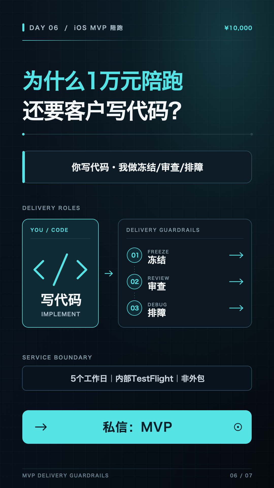

DAY 06 · ¥10,000 MVP · 私信「MVP」
为什么陪跑，仍由客户写代码？
把责任写清楚：客户完成代码，服务方负责让路径正确、问题尽快暴露并把验收推进到 TestFlight。
今日验收
- 发布视频、X、英文 Short。
- 完成 7 条精准互动。
- 获得 1 个有效 MVP 私信。
10 小时安排
- 复盘 MVP 漏斗并记录真实问题。
- 写中英文同源脚本。
- 录制剪辑两个版本。
- 按 MVP 七问登记线索。

打开 Day 6 竖屏封面 PNG ↗